JamesWare · Utility
AI Meter
A quiet, local-first usage meter for Cursor, Claude, and Codex — Mac menu bar, iPhone, and Apple Watch. No account. No dashboard refreshing.
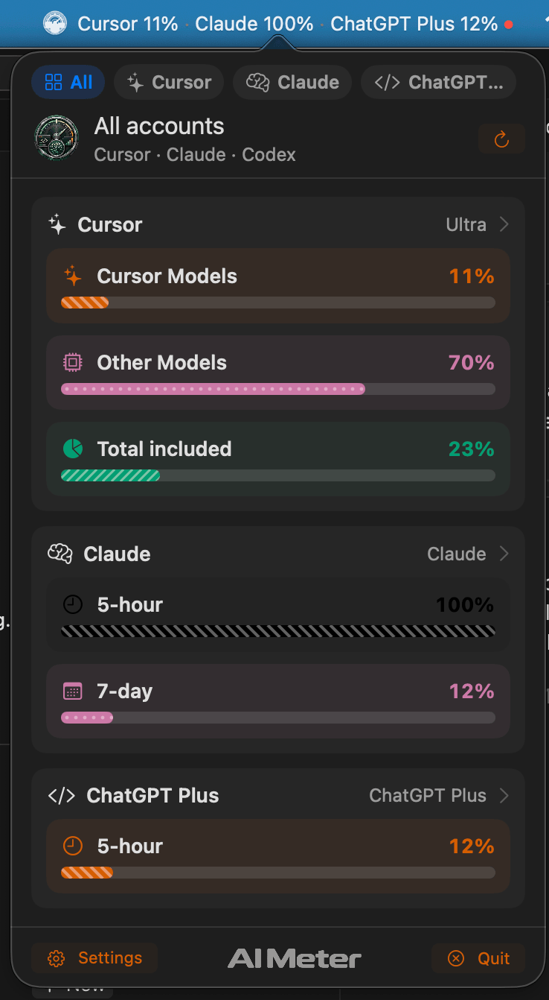
Problem
People who live in AI coding tools hate opening dashboards to see if they still have included usage left. The number should be as glanceable as a battery meter.
What it does
A menu-bar extra and widgets that show Cursor, Claude Code, and Codex usage from sessions already on the machine. iPhone is Cursor-only. Tokens stay in Keychain.
Why it exists
It should feel like an instrument on a developer’s workbench — unofficial, local-first, precise — not another SaaS analytics portal.
Look
The meter
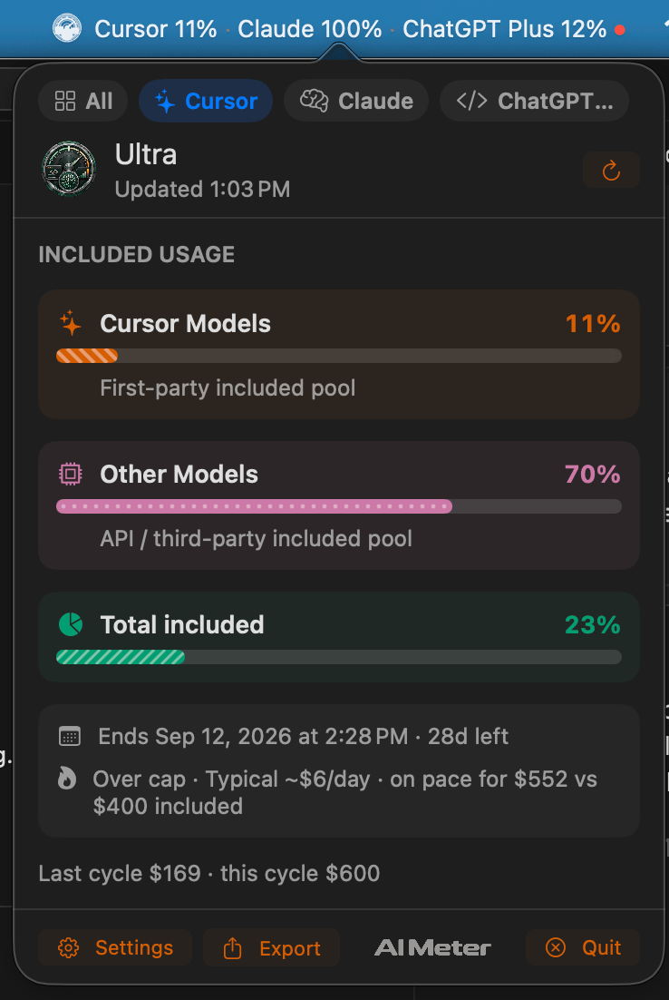
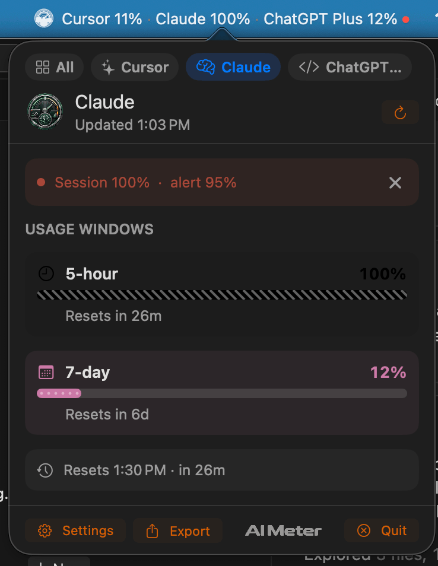
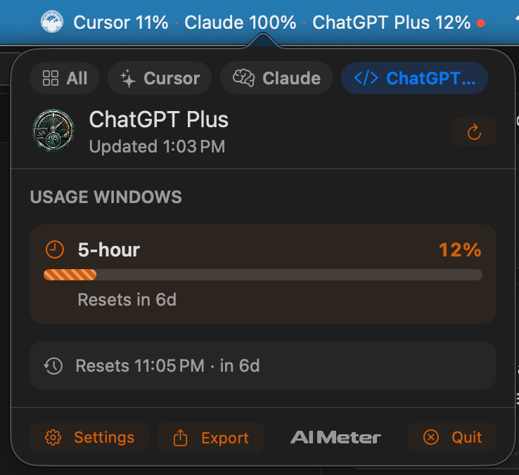
Settings
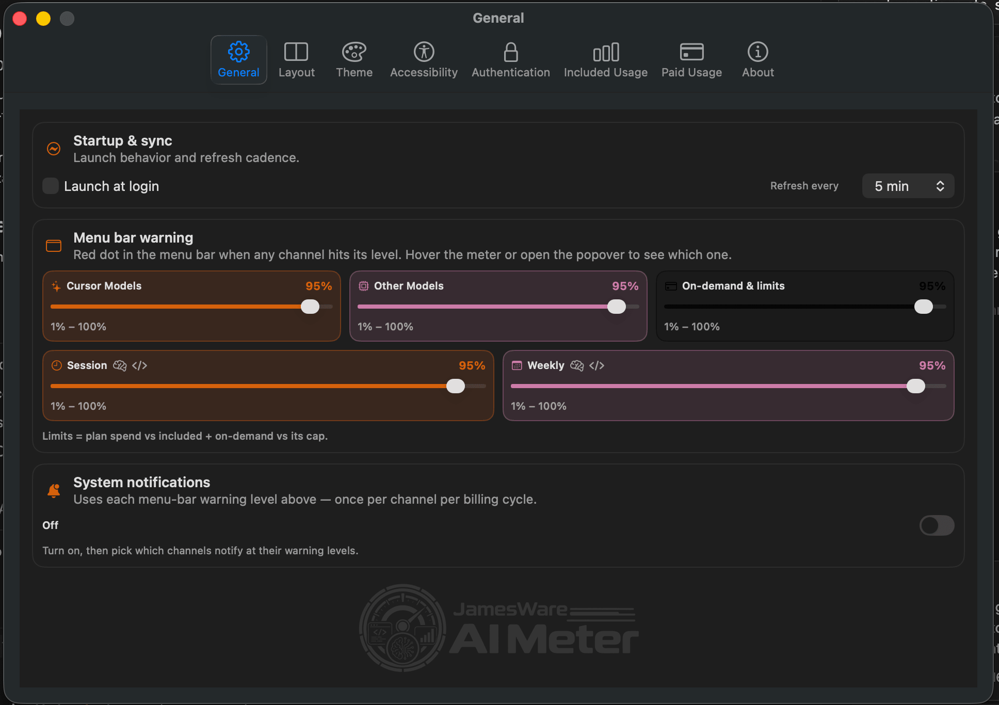
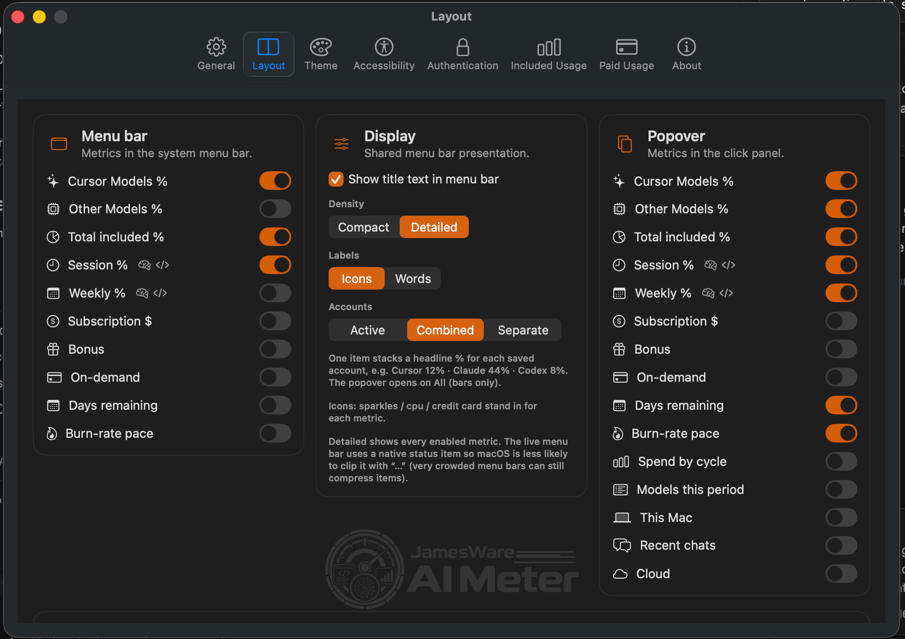
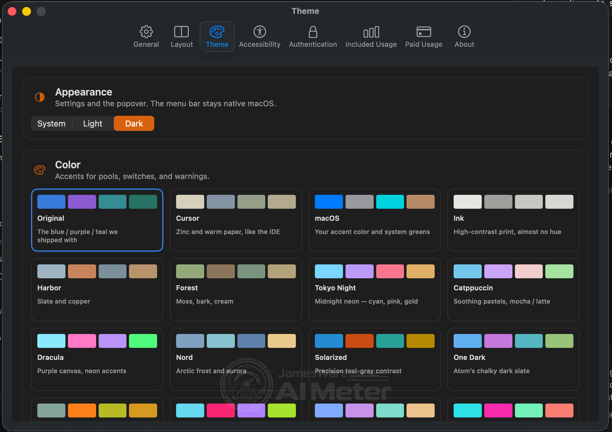
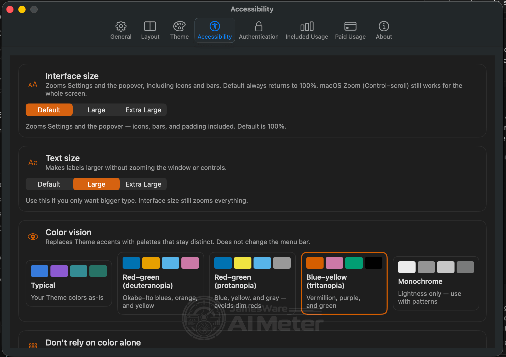
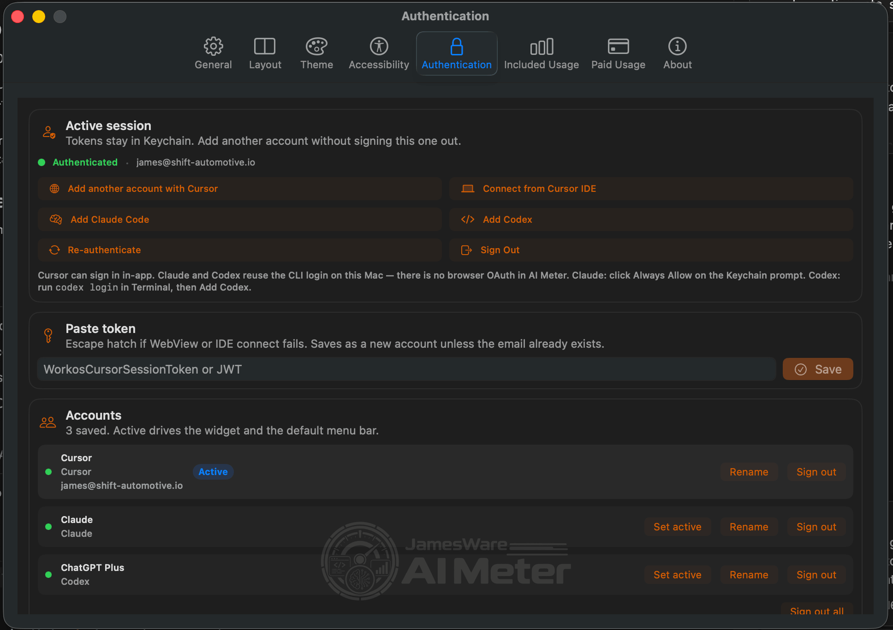
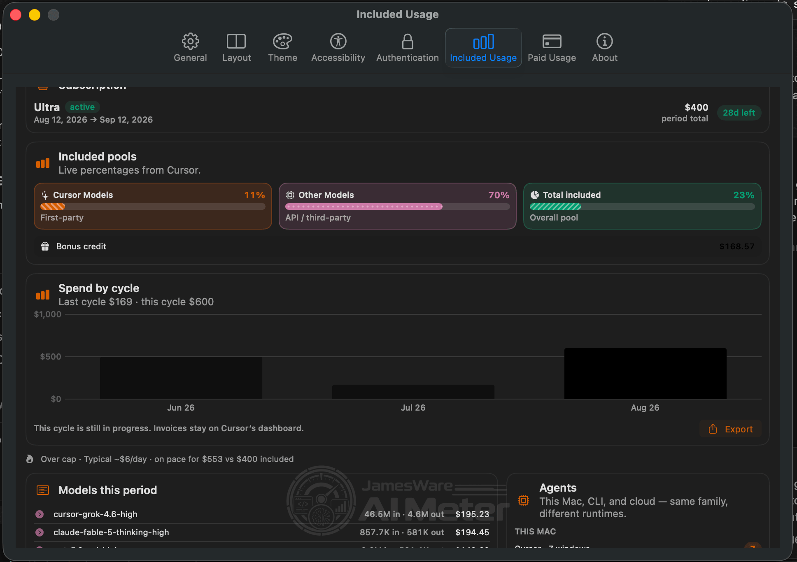
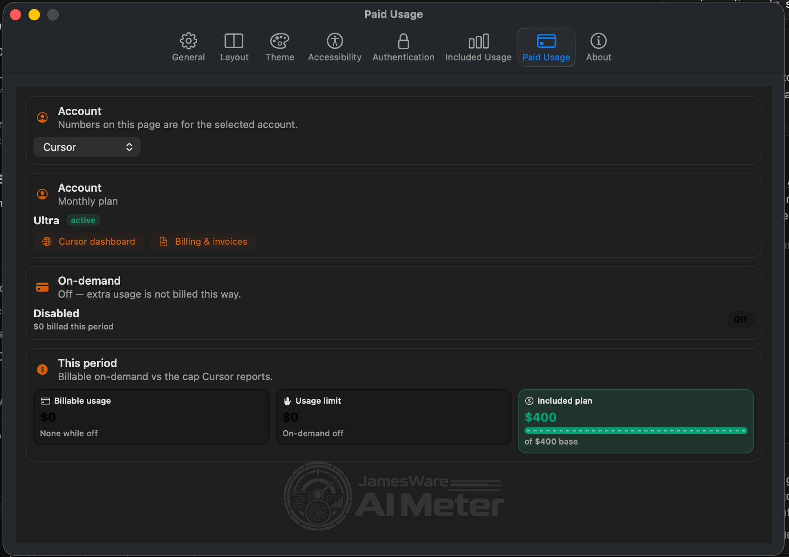
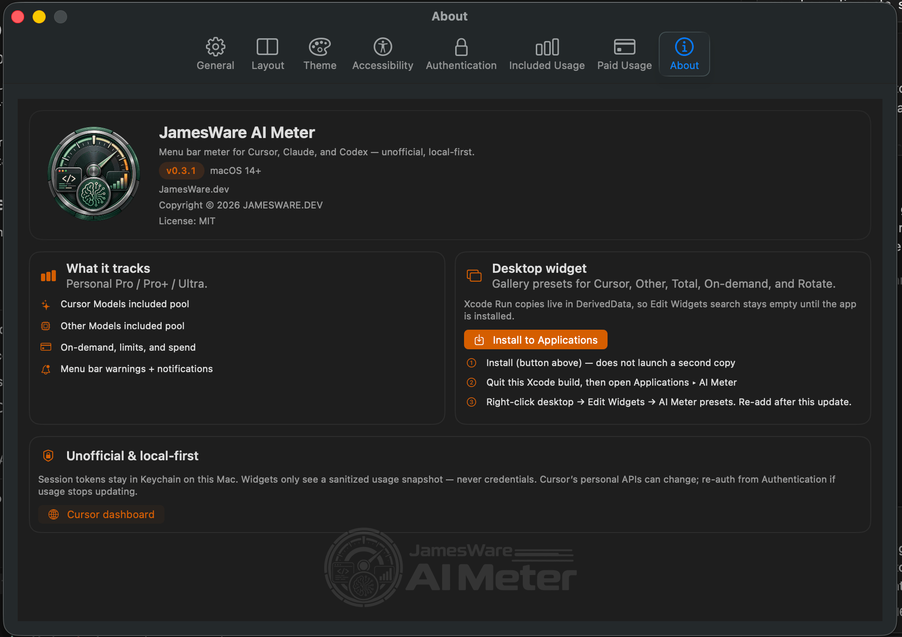
1 / 8 · General
Capabilities
- Cursor Models / Other Models / Total included usage
- Subscription spend vs included cap, bonus credits
- On-demand usage, cap or unlimited
- Per-model cost for the billing window
- Spend by cycle and a linear pace projection
- Menu-bar dots and optional local notifications
- Mac-only Cursor Agents: This Mac, CLI, Cloud
- Claude Code and Codex rolling windows on Mac
- Combined or separate menu-bar status items
- Export the current snapshot as CSV/JSON (no credentials)
How it works
Local-first. Cursor uses the same personal session APIs as the dashboard — not HTML scraping, not a public individual usage API. Claude and Codex read local OAuth credentials already created by those CLIs. Watch gets a sanitized snapshot only. No JamesWare account and no product server. No cookies or JWTs on the wrist.
Current state
Pre-1.0. Native apps exist and run. Not on the Mac App Store — sandbox would block
local IDE credentials. iPhone and Watch are aimed at TestFlight. The GitHub repo is
still named cursor-usage-tracker; the shipping name is AI Meter.
Get it
No Mac App Store. No fake download button. Source is public when the repo is; TestFlight when it exists.